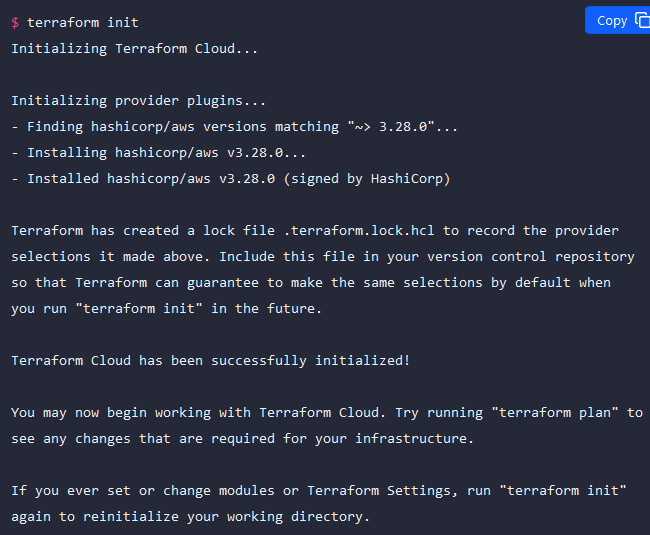

Terraform Cloud Configuration
The main module of a Terraform configuration can integrate with Terraform Cloud to enable its CLI-driven run workflow. You only need to configure these settings when you want to use Terraform CLI to interact with Terraform Cloud. Terraform Cloud ignores them when interacting with Terraform through version control or the API.
To configure the Terraform Cloud CLI integration, add a nested cloud block within the terraform block. You cannot use the CLI integration and a state backend in the same configuration.
terraform {
cloud {
organization = "example_corp"
## Required for Terraform Enterprise; Defaults to app.terraform.io for Terraform Cloud
hostname = "app.terraform.io"
workspaces {
name = "learn-terraform-cloud"
tags = ["app"]
}
}
}

Every Terraform Cloud workspace belongs to a project, which is a group of workspaces. When you create your workspace using this automated CLI workflow, Terraform Cloud adds the workspace to your organization's Default project. Projects help you organize your workspaces into groups, making it easier to find workspaces in large Terraform Cloud organizations.
Assign variable set to workspace
If you are not using a global variable set with your AWS credentials in your Terraform Cloud organization, assign the variable set to your new workspace.
Navigate to your new learn-terraform-cloud workspace. Select Variables in the workspace's menu. Under Variable sets, click Apply variable set.


Terraform Workflow
Terraform Cloud runs Terraform CLI to provision infrastructure.
In its default state, Terraform CLI uses a local workflow, performing operations on the workstation where it is invoked and storing state in a local directory.
Terraform Cloud runs Terraform on disposable virtual machines in its own cloud infrastructure by default.
Terraform Cloud also enables you to share information between workspaces with root-level outputs. Separate groups of infrastructure resources often need to share a small amount of information, and workspace outputs are an ideal interface for these dependencies.
Version Control Integration
Like other kinds of code, infrastructure-as-code belongs in version control, so Terraform Cloud is designed to work directly with your version control system (VCS) provider.
Each workspace can be linked to a VCS repository that contains its Terraform configuration, optionally specifying a branch and subdirectory. Terraform Cloud automatically retrieves configuration content from the repository, and will also watch the repository for changes:
When new commits are merged, linked workspaces automatically run Terraform plans with the new code.
When pull requests are opened, linked workspaces run speculative plans with the proposed code changes and post the results as a pull request check; reviewers can see at a glance whether the plan was successful, and can click through to view the proposed changes in detail.
If you don want to use a VCS provider you can periodically upload configuration files via API/CLI
Command Line Integration
Remote execution offers major benefits to a team, but local execution offers major benefits to individual developers; for example, most Terraform users run terraform plan to interactively check their work while editing configurations.
Terraform Cloud offers the best of both worlds, allowing you to run remote plans from your local command line. Configure the Terraform Cloud CLI integration, and the terraform plan command will start a remote run in the configured Terraform Cloud workspace. The output of the run streams directly to your terminal, and you can also share a link to the remote run with your teammates.
Workspaces
Terraform Cloud manages infrastructure collections with workspaces A workspace contains everything Terraform needs to manage a given collection of infrastructure, and separate workspaces function like completely separate working directories.
Terraform Cloud vs. Terraform CLI Workspaces
Both Terraform Cloud and Terraform CLI have features called workspaces, but they function differently.
- Terraform Cloud workspaces are required. They represent all of the collections of infrastructure in an organization. They are also a major component of role-based access in Terraform Cloud. You can grant individual users and user groups permissions for one or more workspaces that dictate whether they can manage variables, perform runs, etc. You cannot manage resources in Terraform Cloud without creating at least one workspace.
- Terraform CLI workspaces are associated with a specific working directory and isolate multiple state files in the same working directory, letting you manage multiple groups of resources with a single configuration. The Terraform CLI does not require you to create CLI workspaces. Refer to Workspaces in the Terraform Language documentation for more details.